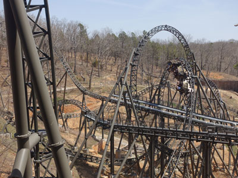
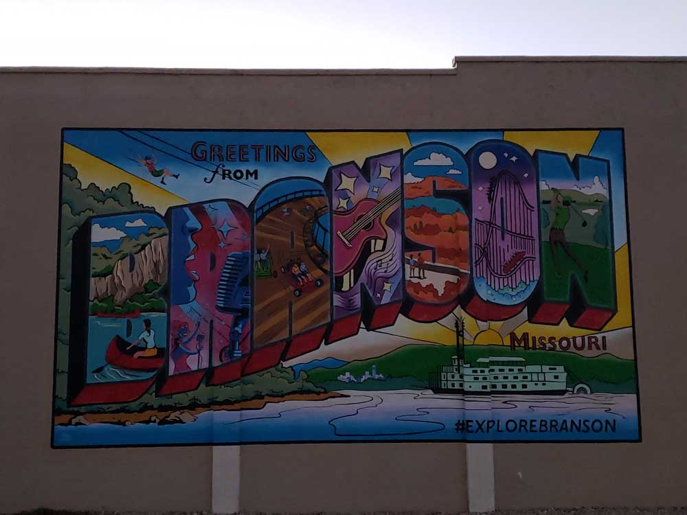
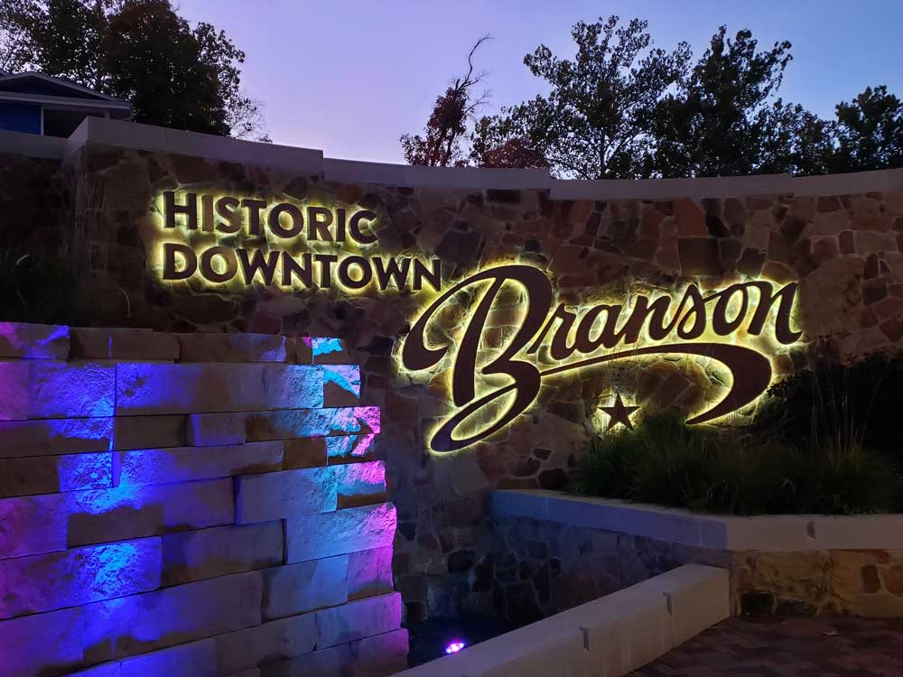
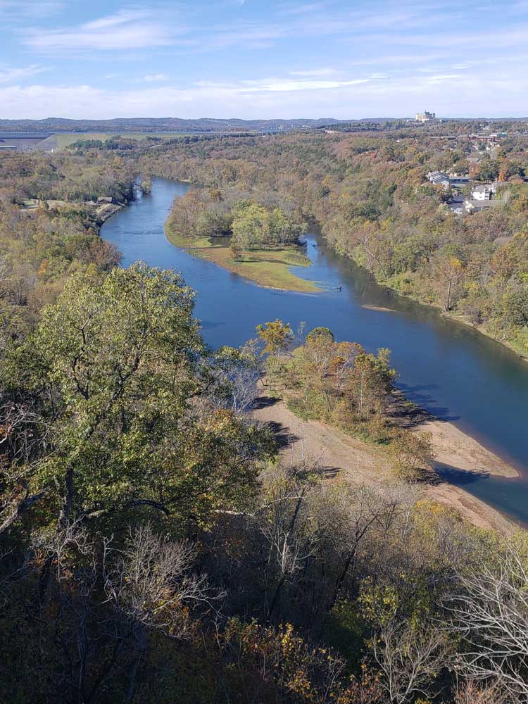
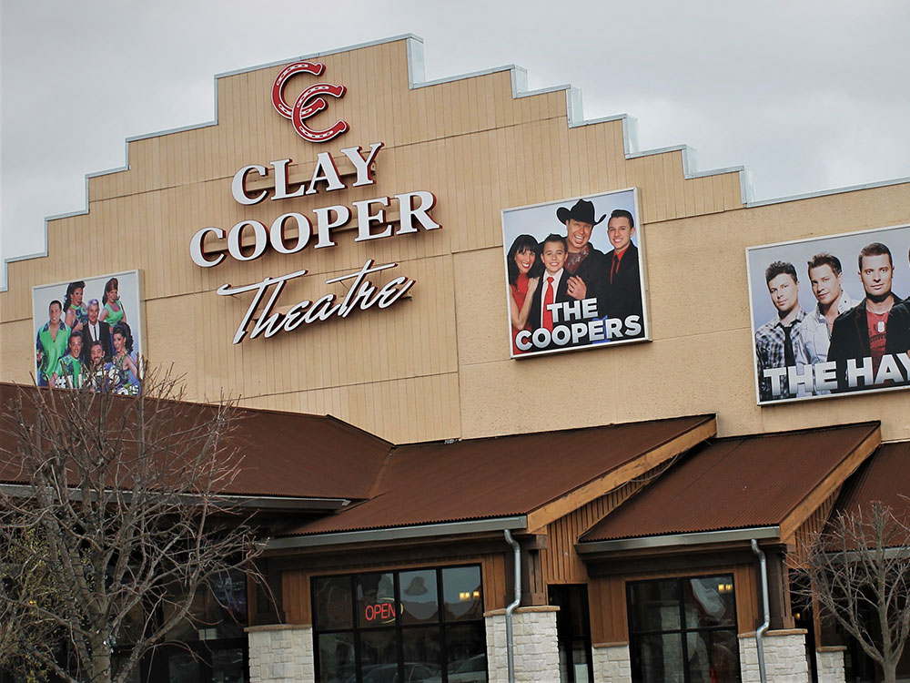
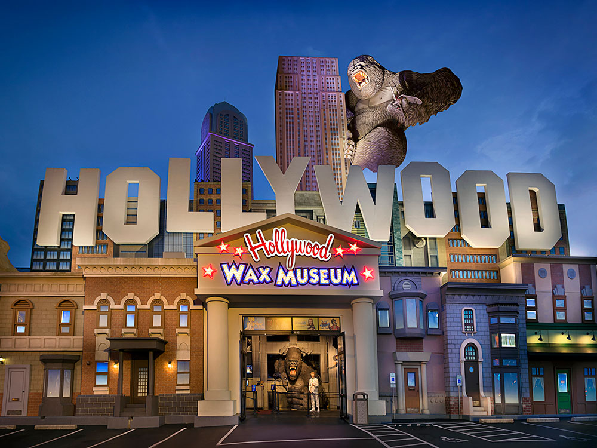

.JPG){kind=link}
City in the Ozark Mountains featuring collection of entertainment theaters including Silver Dollar City and Dolly Parton's Stampede
General Information
Overview
Branson, Missouri, is a resort city in the Ozark Mountains in the southwest corner of the state, and it is famous as the "Live Entertainment Show Capital of the USA." Despite a population of only about 12,000, it draws millions of visitors each year to its dozens of theaters, which offer country music, comedy, magic, and acrobatic and Broadway-style shows. It is also known for Silver Dollar City, a 1880s-themed amusement park, and for Table Rock Lake, one of the best lakes in the Ozarks for fishing and boating.
Visitors come to Branson for the shows, such as Sight & Sound Theatre and Dolly Parton's Stampede, for the family attractions along the Highway 76 strip, and for outdoor recreation on Table Rock Lake and Lake Taneycomo. Branson Landing is a lakeside shopping and dining area, and the city is especially popular with families and groups, with an old-fashioned, patriotic, and wholesome atmosphere. Christmas is a big season, with Ozark Mountain Christmas lights and shows.
History
The area was home to the Osage people and later to Ozark settlers, and the town was named for Reuben Branson, who operated a post office and a general store in the late 1800s. Harold Bell Wright's 1907 novel The Shepherd of the Hills, set in the area, drew the first tourists to the Ozarks, and the nearby Marvel Cave opened for tours. Table Rock Dam, completed in 1958, created Table Rock Lake, and the Baldknobbers Jamboree opened in 1959 as the first live music show in Branson. Silver Dollar City opened in 1960, and in the 1980s and 1990s Branson boomed as country music stars opened theaters, making it one of the leading entertainment destinations in the country.
Sightseeing and Popular Landmarks
Silver Dollar City is an 1880s-themed amusement park with craftspeople, roller coasters, and festivals, and the Branson Landing has a fountain show on the lake with fire and water. The Showboat Branson Belle is a paddlewheeler on Table Rock Lake with dinner cruises and a show, and the Branson Scenic Railway offers a train ride through the Ozark Mountains. The Titanic Museum Attraction, a half-scale replica of the ship, and the Top of the Rock, a luxury lookout and golf complex, are also popular, and Table Rock State Park has a marina and trails.
Culture and Museums
Branson's culture is built around live entertainment. Shows include Sight & Sound Theatre's Biblical productions, Dolly Parton's Stampede dinner show, the Hughes Brothers, the Haygoods, and the Baldknobbers, and many theaters offer tribute acts and variety shows. The Titanic Museum Attraction has exhibits on the ship, and the Hollywood Wax Museum, the Ripley's Believe It or Not, and the Branson Veterans Memorial Museum are other attractions. The Ozark Mountain Christmas season features lights and special shows.
Parks
Table Rock Lake offers boating, fishing, scuba diving, and a lakeshore trail near Table Rock State Park, and Lake Taneycomo is famous for trout fishing. The Ruth and Paul Henning Conservation Area has hiking trails with views of the Ozarks, and Dewey Short Visitor Center at Table Rock Dam has exhibits on the lake. The Branson Scenic Overlook, Lakeside Forest Wilderness Area, and Shepherd of the Hills Fish Hatchery are also nearby.
Seasons and Weather
Branson has a humid subtropical climate. Summers are hot and humid, with highs in the upper 80s°F, and winters are cool, with highs in the 40s°F and about 10 inches of snow. Spring and fall are mild, and the fall colors in the Ozarks are spectacular in October. The busiest seasons are summer and the holiday season from November to December, while some theaters and attractions close or have reduced hours in January and February.
Things to Do
See a Live Show
Branson is known as the "Live Entertainment Capital of the World" and features more than 100 live productions throughout the year. Visitors can enjoy everything from country music and gospel performances to comedy, acrobatics, tribute shows, and large-scale theatrical productions. Sight & Sound Theatre, The Haygoods, SIX, Presleys' Country Jubilee, and Pierce Arrow are among the city's most popular attractions.
Experience Sight & Sound Theatre
Sight & Sound Theatre is widely regarded as one of Branson's premier entertainment experiences. These Broadway-style biblical productions feature massive sets, live animals, elaborate costumes, special effects, and large casts, creating an immersive theatrical experience for audiences of all ages.
Enjoy Dolly Parton's Stampede
One of Branson's most famous attractions, Dolly Parton's Stampede combines a four-course dinner with horseback stunts, musical performances, special effects, and family-friendly entertainment. It consistently ranks among the most popular dinner shows in Branson.
Top Shows
The Haygoods
Type: Music & Variety Show
Duration: Approximately 1 hour 45 minutes
Best For: Families and music lovers
Performed by six siblings, The Haygoods combines live music, harmonies, special effects, lasers, aerial stunts, and more than 20 instruments. It is frequently considered one of Branson's most popular and energetic shows.
SIX
Type: A Cappella Music Show
Duration: Approximately 1 hour 45 minutes
Best For: Families and music enthusiasts
This award-winning production features six brothers performing contemporary music, comedy, percussion, and instrument sounds using only their voices, making it one of Branson's most unique entertainment experiences.
Sources: Branson entertainment and show information verified through Branson tourism resources, show guides, and theater information, including Sight & Sound Theatre, Dolly Parton's Stampede, The Haygoods, SIX, Presleys' Country Jubilee, and Pierce Arrow. https://everythingbranson.com/shows https://www.thousandhillsresorthotel.com/news/best-branson-shows-2026 https://travel.usnews.com/features/the-best-branson-shows
Visit Silver Dollar City
One of the Midwest's premier theme parks, Silver Dollar City combines thrilling rides, live entertainment, artisan demonstrations, festivals, and Ozark heritage experiences. The park is built around Marvel Cave and is one of Branson's top attractions for families and adventure seekers.
Explore Table Rock Lake
Table Rock Lake provides excellent opportunities for boating, fishing, kayaking, paddleboarding, swimming, and sightseeing. The lake's clear water and scenic Ozark surroundings make it one of the most popular outdoor recreation destinations in southwest Missouri.
Experience Top of the Rock
Top of the Rock combines breathtaking Ozark views, the Lost Canyon Cave and Nature Trail, museums, restaurants, golf courses, and scenic overlooks. It is one of the area's most popular destinations for sightseeing, dining, and photography.
Top Attractions
Titanic Museum Attraction
Type: Interactive Museum
Best For: History enthusiasts and families
Duration: 2–3 hours
Built in the shape of the famous ocean liner, the Titanic Museum features authentic artifacts, recreated rooms, and interactive exhibits that tell the stories of passengers and crew who sailed aboard the Titanic.
Aquarium at the Boardwalk
Type: Aquarium
Best For: Families and children
Duration: 1–2 hours
This modern aquarium features immersive underwater exhibits, colorful marine life, interactive displays, touch tanks, and themed environments that make it one of Branson's most popular family attractions.
Top Trails
Table Rock Lakeshore Trail
Length: Approximately 2.2 miles one way
Elevation Gain: Minimal
Difficulty: Easy
This paved trail follows the shoreline of Table Rock Lake and offers scenic lake views, access to recreational areas, and opportunities for walking, running, and biking.
Ruth and Paul Henning Conservation Area Trail
Length: Approximately 3.0 miles loop
Elevation Gain: Approximately 350 feet
Difficulty: Moderate
This scenic trail system winds through forests and glades while providing overlooks of the Ozark Mountains and Branson area. It is a popular destination for hiking, wildlife viewing, and photography.
Sources: Explore Branson official visitor information, including live entertainment, Silver Dollar City, Table Rock Lake recreation, outdoor activities, and major attractions. https://www.explorebranson.com/ Additional trail and recreation information verified through Missouri conservation and visitor resources, including the Ruth and Paul Henning Conservation Area and Table Rock Lake trail information. https://mdc.mo.gov/discover-nature/places/henning-conservation-area https://www.recreation.gov/
In 1882, Reuben Branson opened a general store and post office in the area. In 1894, William Henry Lynch bought Marble Cave (renamed "Marvel Cave") and began charging visitors to tour it. Hugo and Mary Herschend leased the cave for 99 years in 1950 and began hosting square dances in it. The Herschend Family modernized the cave with electricity and concrete staircases, and in 1960 the Herschends opened Silver Dollar City, a re-creation of a frontier town that featured five shops, a church, and a log cabin, with actors that played out the feud between the Hatfields and the McCoys.
Harold Bell Wright published his novel about the Ozarks, The Shepherd of the Hills, in 1907. The Old Mill Theater began its first outdoor production based on the novel in 1960. The show known as The Shepherd of the Hills Outdoor Drama & Homestead continued in its 58th season for 2017. It is also the home of Inspiration Tower, the Sons of the Pioneers show, and other attractions. The Harold Bell Wright Museum is located within The World's Largest Toy Museum complex. The Presley family became the first to move their show (Presleys' Country Jubilee) to Highway 76 in 1967, followed a year later by the Baldknobbers. Eventually Branson would have more than 50 theaters, most of them located on Highway 76.
In 1983, Branson began its transformation into a major tourist attraction when the Roy Clark Celebrity Theatre opened and began to bring famous country music stars to Branson. Many of the performers who have had their own theaters in Branson first discovered Branson when they performed at this venue. The Roy Clark Celebrity Theatre at the Lodge of the Ozarks has been called the "birthplace of Branson celebrity theatres". The increasing number of theaters and other attractions opening in Branson drew the attention of 60 Minutes, which aired an episode about Branson on December 8, 1991, and called it the "live music capital of the entire universe". In 1998, the Acrobats of China arrived in Branson, making them one of the first international shows to call Branson home. They opened their theatre, the New Shanghai Theatre, in 2005. In 2006, Dick Clark's American Bandstand Theatre opened and is the most recent new theater to be built on Route 76. Branson has continued to add theaters (the most recent being the Sight & Sound Theatres) and shows; it refers to itself as "the live music show capital of the world".
Besides the numerous entertainment theaters for which Branson is known, other local attractions include Hollywood Wax Museum Branson, Silver Dollar City, White Water, Branson Top Ops, Mount Pleasant Winery, Dolly Parton's Stampede, ziplines, cave tours, go-karts, mini golf, and more. Ripley's Odditorium is housed in a building that has been made to look as if it is cracked wide open by an earthquake or other disaster, while the Titanic Museum is a half-scale replica of the famous ship and iceberg.
Branson Landing opened in the summer of 2006 on the Lake Taneycomo waterfront in downtown Branson. The lakefront project includes retail space with Bass Pro Shops and Belk as anchors in an outdoor shopping mall of stores and restaurants. It also features a scenic boardwalk along the lakefront with the Branson Landing Fountains at the heart of the property as well as a Hilton Hotel. Branson Landing has been known to host summer concerts and other special events throughout the year. The convention center, situated between Branson Landing and Historic Downtown Branson, opened September 7, 2007. The Branson Scenic Railway is located in the old depot, across from Branson Landing.
This article uses material from Wikipedia as well as information from official tourism and institutional sources. Key references include Explore Branson, Silver Dollar City, Table Rock Lake, Missouri Division of Tourism, Branson Scenic Railway, and National Weather Service Springfield. Wikipedia material is from the article "Branson, Missouri", and is available under the Creative Commons Attribution-Share-Alike License 3.0.
Featured Locations
Branson Landing
Open-air waterfront entertainment district featuring shopping, dining, fountains, riverfront walkways, and live events along a scenic lakeside setting.
Branson Scenic Railway
Historic passenger train excursion featuring vintage railcars, Ozark scenery, river crossings, tunnels, and narrated journeys through mountainous landscapes.
Showboat Branson Belle
Lakefront dinner cruise attraction featuring live entertainment, panoramic Ozark scenery, themed shows, and onboard dining aboard a classic riverboat-style vessel.

Jeff P from Berkeley, CA, USA, CC BY 2.0, via Wikimedia Commons; Image Size Adjusted
.jpg){kind=link}
Silver Dollar City
Theme park featuring roller coasters, live entertainment, craft demonstrations, festival events, and an 1880s-style atmosphere.

Jeff P from Berkeley, CA, USA, CC BY 2.0, via Wikimedia Commons; Image Size Adjusted
Table Rock State Park
Artificial lake in the Ozarks of southwestern Missouri is a popular attraction for the city of Branson




.JPG){kind=link}
